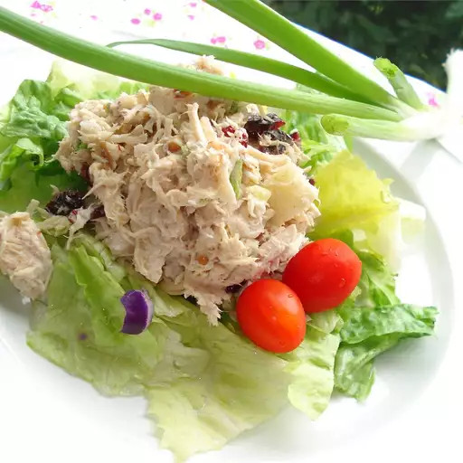

Cranberry Chicken Salad

Description
Disovered by me and a friend of mine while perusing a selection of gas station sandwiches (thank you, Speedway), the both of us loved this sweeter, nuttier twist on what is now considered a much more boring version of the summer picnic classic. While this is not that recipe, it is still both enjoyable and bright to the palate. I hope you enjoy this (more or less verbatim) recipe from AllRecipes as much as we have!
Ingredients
- 1/2 cup mayonnaise, or to taste
- 2 green onions, chopped
- 1/2 cup sweetened dried cranberries
- 1/4 green apple, shredded
- 1/4 cup chopped pecans
- 1 tablespoon lime juice
- 1/4 teaspoon dried dill weed
- 1 pinch salt and black pepper, or to taste
Steps
- Mix together chicken and mayonnaise in a bowl, stir to coat well. Stir in green onions, dried cranberries, apple, pecans, lime juice, dill weed, salt, and pepper.
- Serve immediately or refrigerate for several hours or overnight (the flavor just gets better).